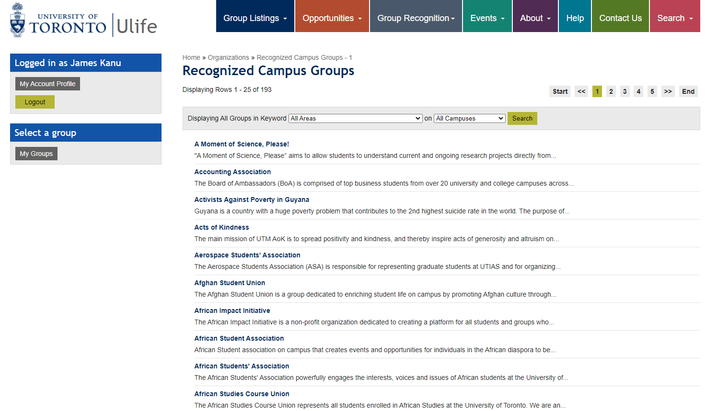

Clubcus
For UofT Students, by Uoft Students.
Timeline:
February 2021 - April 2021
February 2021 - April 2021
Team:
Bianca Pokhrel, JJ Kanu (Me!), Nicolas Ruiz, Suguru Seo
Bianca Pokhrel, JJ Kanu (Me!), Nicolas Ruiz, Suguru Seo
Tools:
MongoDB, Express, React, Node.js
MongoDB, Express, React, Node.js
Overview
A semester-long project for a Web Development course at University of Toronto, CSC309, Clubcus is a web app made for University of Toronto students that provides a centralized location to find, join, and manage recognized and unrecognized groups at school.
My Role
I was mainly responsible for the user side aspect of the web application. This included the sign-in/log-in pages, the profile page, the navigation bar, and a little bit on the group search pages.
Why Clubcus?
At the time of this project’s creation, we were still amidst a province wide lockdown that spanned most of our semester. The difficulties of finding a group or club to join was only exacerbated by the shift to online platforms.
At the time, UofT has a website that lists all recognized clubs at UofT on Ulife. Ulife presents a list of all recognized groups at UofT, but only displays general group info, often bare with only links to external social media.
This app intends to allow users to create groups for others to join, make announcements to members, and manage member listing. Official clubs recognized by the University are also able to create their own pages, with added verification to distinguish their registered status. This will provide any university student the ease to find like-minded friends.
At the time, UofT has a website that lists all recognized clubs at UofT on Ulife. Ulife presents a list of all recognized groups at UofT, but only displays general group info, often bare with only links to external social media.
This app intends to allow users to create groups for others to join, make announcements to members, and manage member listing. Official clubs recognized by the University are also able to create their own pages, with added verification to distinguish their registered status. This will provide any university student the ease to find like-minded friends.

Planning and Design
User Profiling
Users will be in three categories: regular users that can join groups and comment under announcements, admins which can only manage and act as moderator to the groups the account is assigned to, and superadmins which serve to only create and delete clubs at will. These profiles don’t overlap (i.e admins can’t join clubs).
Data
Users will have their list of clubs, ther basic profile information, and pending clubs awaiting acceptance. Admins will not have any information besides the group they’re assigned to. Superadmins likewise only manage the list of clubs and have no special data. The groups themselves will have a category, and information about the group itself. We will have a database for all users, one for groups, and perhaps one for comments and announcements if necessary.
Admin Functionality
There are two types of admins:
- Super Admin: Acts as moderator for the whole app; they can verify groups as official clubs and delete any groups.
- Group Admin: Representatives of group members (or executives of clubs) can post announcements, add, delete group members.
Implementation
Clucus was built using a MERN stack. The front-end was created using React Components while Express and MongoDB was used to run the server and access the database,
Initially we considered using plain JavaScript to make the application, however using React components allowed for reproducibility among multiple pages. The choice to use a MERN stack quickly followed.
Initially we considered using plain JavaScript to make the application, however using React components allowed for reproducibility among multiple pages. The choice to use a MERN stack quickly followed.
Deployment
By the end of the semester, we were able to complete the project on top of balancing our other academic responsibilities. Although missing some of the initial features we had mapped out we were able to achieve several of our set out key features:
- Login and Signup
- Users can create user accounts to join groups or create an admin account to make a new group
- Profile Page
- Users can edit the information displayed to other group members and manage their club memberships
- Group Search
- Users can search for other groups and official clubs and apply for membership
- Commenting
- Users can comment and like group posts
- Club Management
- Group admins can create new posts, manage group members, and link external group resources
Want to see the site for yourself? Check out the deployed link here!
What I Learned
Compared to another project using a MERN stack, Palyglot, I was able to work on more of the back-end side in Clubcus. This included working on our server and creating the routes to access the database. Aside from refreshing front-end skills and strengthening back-end technical skills, I was reminded of the importance of communication when working on a large web app.
With our school semester tighter than usual as a result of the pandemic, the difference in availibilities in our group resulted in some aspects of the project being more complete than others. In hindsight, a better defined sprint cycle may have benefited our final project.
As an old videogame I used to play would say, "Victory lies in preparation".
With our school semester tighter than usual as a result of the pandemic, the difference in availibilities in our group resulted in some aspects of the project being more complete than others. In hindsight, a better defined sprint cycle may have benefited our final project.
As an old videogame I used to play would say, "Victory lies in preparation".